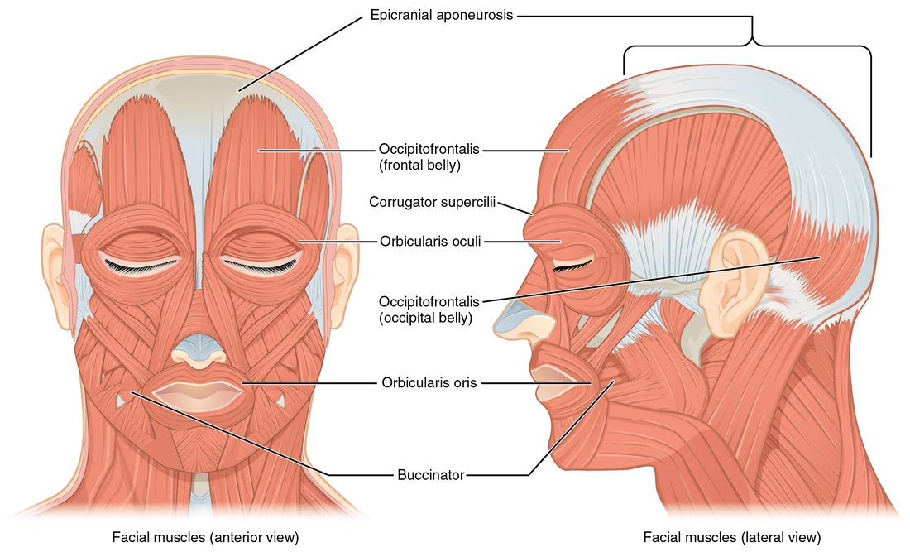
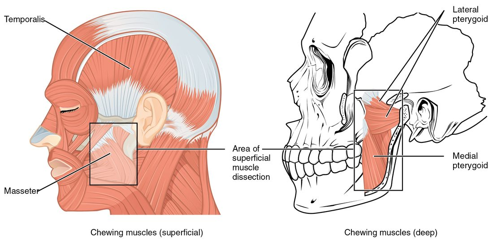
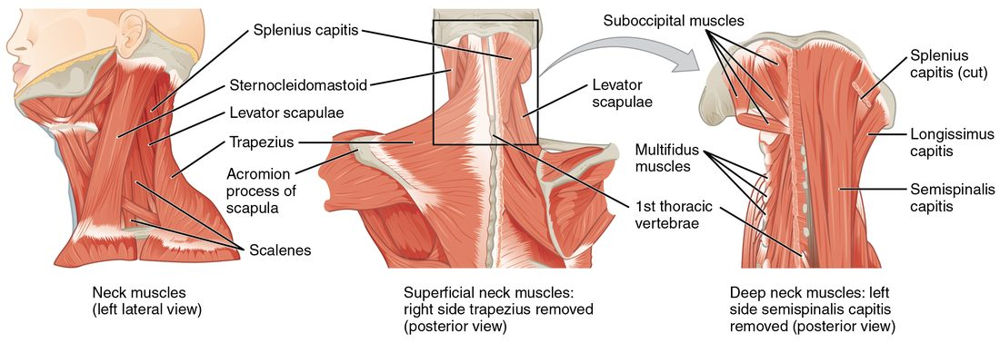
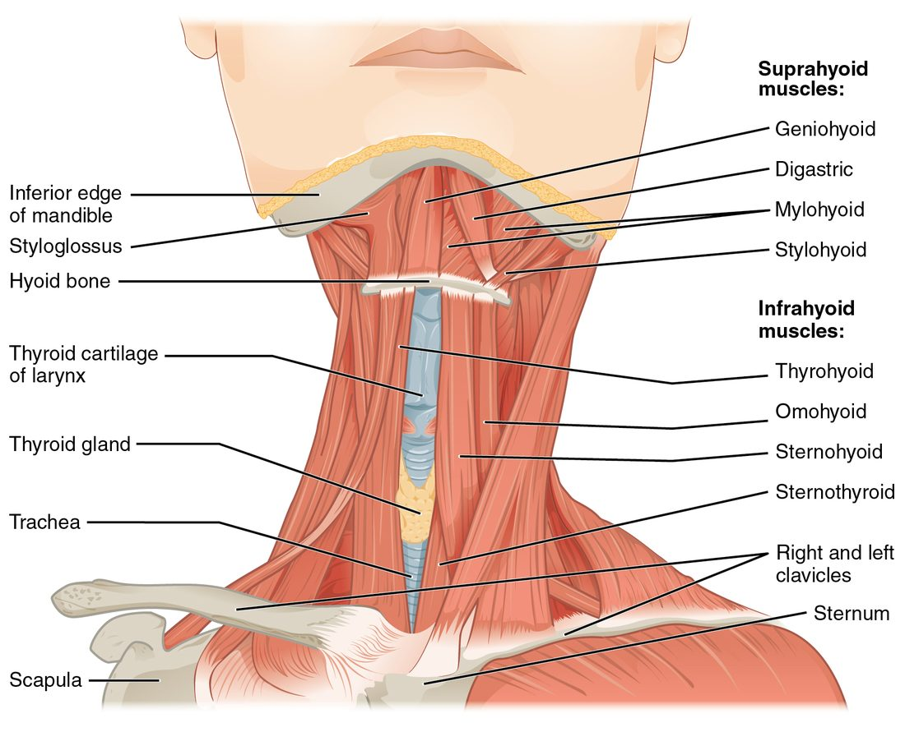

Your face and neck hold three groups of muscles that do very different jobs. The facial muscles move your skin to make expressions. The chewing muscles move your lower jaw. The neck muscles turn and bend your head and move the hyoid bone when you swallow and speak. This page covers the facial muscles and neck muscles you need to be able to name and locate, with the origin, insertion and action of each major one, and explains how each group's attachments set what it can do.
Muscles of facial expression
Raise your eyebrows, then squeeze your eyes shut, then smile. Nothing in your skeleton moved. The muscles that made those expressions pulled on your skin, not on your bones.
That is what sets the muscles of facial expression apart from almost every other skeletal muscle. Most of them originate on a bone of the skull and insert into the skin or into another muscle. When one contracts, it pulls the skin toward its origin, creasing it or moving the lips, eyelids or eyebrows. They lie just under the skin, in the subcutaneous tissue, with no deep fascia over them. Find each one in Figure 1.

The scalp: occipitofrontalis
The occipitofrontalis (occipit- = back of the head, front- = forehead) covers the top of your skull. It has two bellies: the frontalis over the forehead and the occipitalis over the back of the skull. Between them lies the epicranial aponeurosis (epi- = upon, crani- = skull), a flat sheet of tendon stretched over the top of the skull.
- Frontalis: originates on the epicranial aponeurosis and inserts into the skin of the eyebrows and forehead. It raises the eyebrows and wrinkles the forehead, as in surprise.
- Occipitalis: originates on the occipital bone and the mastoid process of the temporal bone, and inserts on the epicranial aponeurosis. It pulls the scalp backward, which anchors the aponeurosis so the frontalis can pull against it.
The two rings: orbicularis oculi and orbicularis oris
Both are circular muscles (orbicul- = small circle), and each acts as a sphincter around an opening.
- Orbicularis oculi (ocul- = eye) surrounds the orbit and runs into the eyelids. It originates on the bones of the medial wall of the orbit and inserts into the skin around the eye. It closes the eyelids, gently in a blink and tightly in a squint.
- Orbicularis oris (or- = mouth) surrounds the lips. Its fibers come mostly from the other muscles that meet at the corners of the mouth, and it inserts into the skin and lining of the lips. It closes the lips and pushes them forward, as in a kiss or when you whistle.
Smiling and the cheek: zygomaticus major and buccinator
- Zygomaticus major originates on the zygomatic bone, your cheekbone, and inserts at the corner of the mouth. It pulls the corner of the mouth up and back: the smiling muscle.
- Buccinator (bucc- = cheek; buccinator = trumpeter) forms the wall of the cheek. It originates on the maxilla and mandible beside the molar teeth and inserts into the orbicularis oris at the corner of the mouth. It presses the cheek against the teeth. That pushes air out when you blow up a balloon, and while you chew it pushes food off the cheek back onto the teeth.
The buccinator helps you chew, but it is still a muscle of facial expression. It moves the cheek, not the jaw. The next section covers the muscles that move the jaw.
Muscles of mastication
Clench your teeth and put your fingertips on the angle of your jaw, then on your temple. Both bulge. Those are two of the four muscles of mastication (masticare = to chew). Unlike the facial muscles, they originate on the skull and insert on the mandible, so they move bone: they open, close and grind the lower jaw at the temporomandibular joint. Find them in Figure 2.

- Masseter (maseter = chewer): originates on the zygomatic arch and inserts on the outer surface of the angle of the mandible and the upright plate of bone above it. It elevates the mandible, closing the jaw. It is the prime mover of jaw closing.
- Temporalis: a fan-shaped (convergent) muscle that originates across the temporal fossa, on the side of the skull, and converges on a tendon that passes under the zygomatic arch to insert on the coronoid process of the mandible, the thin point of bone at the front of the mandible's upright back part. It elevates the mandible and its back fibers retract it, pulling the jaw backward.
- Medial pterygoid (pteryg- = wing): originates on the wing-shaped plates of the sphenoid bone and inserts on the inner surface of the angle of the mandible, mirroring the masseter on the outside. It elevates the mandible and helps move it from side to side.
- Lateral pterygoid: originates on the sphenoid bone and runs almost horizontally backward to insert on the neck of the mandible's condyle and on the disc of the temporomandibular joint. It protracts the mandible (juts it forward), helps open the mouth by pulling the condyle forward, and, working one side at a time, moves the jaw side to side for grinding.
Opening versus closing
Three of the four chewing muscles close the jaw. Only the lateral pterygoids help open it, with help from gravity and from the suprahyoid muscles below the jaw (covered below). That imbalance explains why closing is so much stronger than opening: you can crack a nut with your molars, but the muscles that open your jaw are many times weaker, and a firm hand under your chin can hold it shut.
| Muscles of facial expression | Muscles of mastication | |
|---|---|---|
| Usual origin | Skull bones (or an aponeurosis) | Skull bones |
| Usual insertion | Skin, or another muscle | Mandible |
| What moves | Skin of the face and scalp | The lower jaw at the temporomandibular joint |
| Examples | Occipitofrontalis, orbicularis oculi, orbicularis oris, zygomaticus major, buccinator | Masseter, temporalis, medial and lateral pterygoids |
| Role in eating | The buccinator keeps food on the teeth; the orbicularis oris seals the lips | Bite and grind the food |
Neck muscles: moving the head
The neck muscles fall into two working groups: large muscles that move the head and neck, and small muscles attached to the hyoid bone. Start with the large ones, seen from the side in Figure 3.

Sternocleidomastoid
The sternocleidomastoid is named from its attachments (see the previous topic): stern- (sternum), cleido- (clavicle), mastoid (the mastoid process). It has two heads of origin, one on the manubrium of the sternum and one on the medial end of the clavicle, and inserts on the mastoid process of the temporal bone, just behind your ear. Turn your head to the left and you can see and feel the right one stand out as a cord along the side of your neck.
- One side contracting: tilts the head toward the shoulder on the same side (lateral flexion) and turns the face toward the opposite side. The right muscle turns your face to the left.
- Both sides contracting: flex the neck, bringing your chin toward your chest, as when you lift your head off a pillow.
The muscle also works as a landmark. It divides each side of the neck into a front triangle and a back triangle, which clinicians use to describe where a lump or wound lies.
Scalenes
The three scalenes (anterior, middle and posterior; scalen- = uneven, as in an uneven-sided triangle) lie deep on the side of the neck. They originate on the transverse processes of the cervical vertebrae and insert on the first two ribs.
- With the neck held still, they elevate the first and second ribs. That enlarges the top of the chest as you breathe in. They work hardest in heavy breathing, but recordings of their electrical activity show they are active in most breaths at rest as well.
- With the ribs held still, they flex the neck; one side alone bends the neck to that side.
Extending the head, tipping it back to look up, is done mainly by muscles at the back of the neck. They are part of a larger group that runs the whole length of the back, covered in the next topic.
Neck muscles: the hyoid groups
Put a finger on the front of your neck, just above the bump of your voice box, and swallow. You feel everything jump up and then drop back. The hyoid bone, and the voice box that hangs from it, are pulled up by one set of muscles and down by another (Figure 4). Remember that the hyoid does not form a joint with any other bone; it hangs in muscles and ligaments, so the pull of these muscles is what holds it in place.

- The suprahyoid muscles (supra- = above) lie above the hyoid, between it and the mandible or the base of the skull. They include the digastric (di- = two, gaster = belly; two bellies joined by a tendon that slides through a loop on the hyoid), the mylohyoid, which forms the floor of the mouth, the geniohyoid (geni- = chin) and the stylohyoid, from the styloid process. They elevate the hyoid and the voice box during swallowing. If the hyoid is held down, they instead pull the mandible down and help open the mouth.
- The infrahyoid muscles (infra- = below) lie below the hyoid and are often called the strap muscles for their flat, ribbon-like shape (parallel fascicles). They include the sternohyoid, sternothyroid, thyrohyoid and omohyoid (om- = shoulder; it runs from the scapula). Their names give their attachments: each runs from the sternum, the voice box's large cartilage or the scapula to the hyoid or that cartilage. They pull the hyoid and voice box back down after swallowing and hold the hyoid still, as fixators, when the suprahyoids open the jaw.
| Suprahyoid muscles | Infrahyoid muscles | |
|---|---|---|
| Position | Above the hyoid bone | Below the hyoid bone |
| Attach the hyoid to | The mandible and the base of the skull | The sternum, the voice box and the scapula |
| Main action on the hyoid | Elevate it (swallowing) | Depress it (after swallowing) |
| Second action | Depress the mandible to open the mouth, when the hyoid is held still | Hold the hyoid still (fixators) so the suprahyoids can open the mouth |
| Examples | Digastric, mylohyoid, geniohyoid, stylohyoid | Sternohyoid, sternothyroid, thyrohyoid, omohyoid |
Major muscles of the head and neck at a glance
| Muscle | Origin | Insertion | Main action |
|---|---|---|---|
| Frontalis (occipitofrontalis) | Epicranial aponeurosis | Skin of the eyebrows and forehead | Raises the eyebrows, wrinkles the forehead |
| Orbicularis oculi | Medial wall of the orbit | Skin around the eye | Closes the eyelids |
| Orbicularis oris | Muscles around the mouth | Skin and lining of the lips | Closes and protrudes the lips |
| Zygomaticus major | Zygomatic bone | Corner of the mouth | Pulls the corner of the mouth up and back (smile) |
| Buccinator | Maxilla and mandible beside the molars | Orbicularis oris at the corner of the mouth | Presses the cheek against the teeth |
| Masseter | Zygomatic arch | Outer surface of the angle of the mandible | Elevates the mandible (closes the jaw) |
| Temporalis | Temporal fossa | Coronoid process of the mandible | Elevates and retracts the mandible |
| Medial pterygoid | Sphenoid bone | Inner surface of the angle of the mandible | Elevates the mandible; side-to-side grinding |
| Lateral pterygoid | Sphenoid bone | Condyle of the mandible and the joint's disc | Protracts the mandible, helps open the mouth; side-to-side grinding |
| Sternocleidomastoid | Manubrium and medial clavicle | Mastoid process | One side: tilts the head to the same side and turns the face to the opposite side. Both: flex the neck |
| Scalenes | Transverse processes of the cervical vertebrae | First and second ribs | Elevate the upper ribs; flex the neck |
Summary
The muscles of facial expression originate on the skull and insert into skin, so they move the face rather than bones: the occipitofrontalis (frontal and occipital bellies joined by the epicranial aponeurosis) raises the eyebrows, the orbicularis oculi and orbicularis oris are sphincters that close the eyes and lips, the zygomaticus major smiles, and the buccinator presses the cheek to the teeth. The muscles of mastication insert on the mandible: the masseter, temporalis and medial pterygoid close the jaw, and the lateral pterygoid protracts it and helps open it. In the neck, one sternocleidomastoid turns the face to the opposite side and both together flex the neck; the scalenes lift the first two ribs. The suprahyoid muscles raise the hyoid in swallowing and help open the jaw; the infrahyoid strap muscles pull it back down and hold it still.